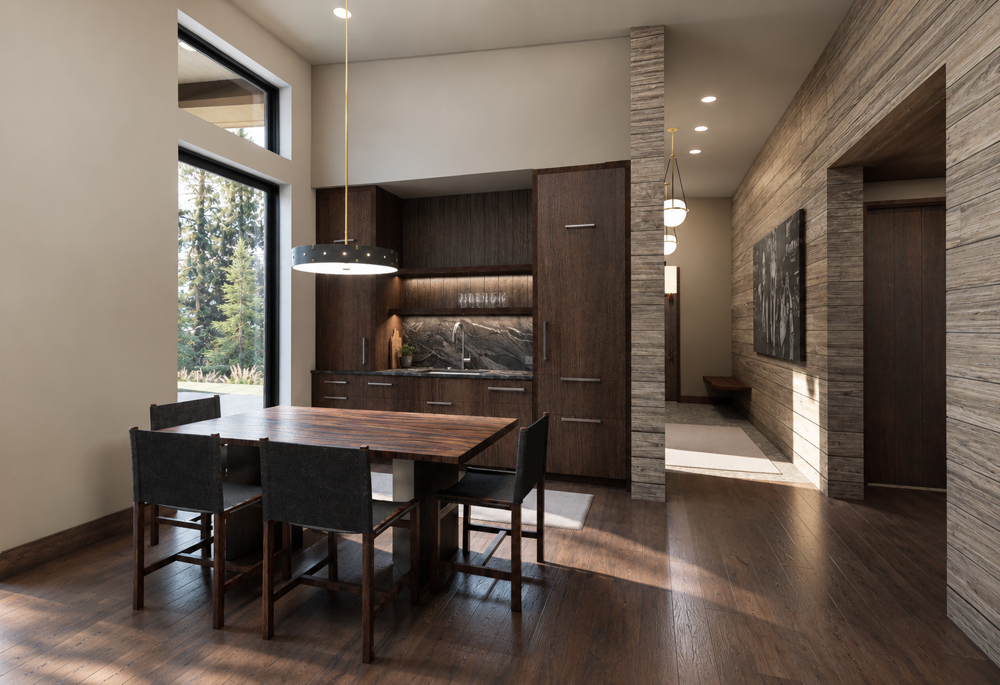
Sweet Water Ranch
Vail, Colorado area · Professional · Guest Cabin 3 — Outlaw
01 / Professional
An architectural designer focused on thoughtful residential and hospitality environments, with an emphasis on strong relationships between site, material, structure, and the people who use a space.
Guest Cabin 3 — “Outlaw” · Vail, Colorado area
Interior design development for a guest cabin at Sweet Water Ranch, centered on a warm, restrained palette of dark wood, stone, leather, metal, and tailored furnishings. My work focused on translating the interior concept into drawings and details while developing the furniture, lighting, and visual presentation.
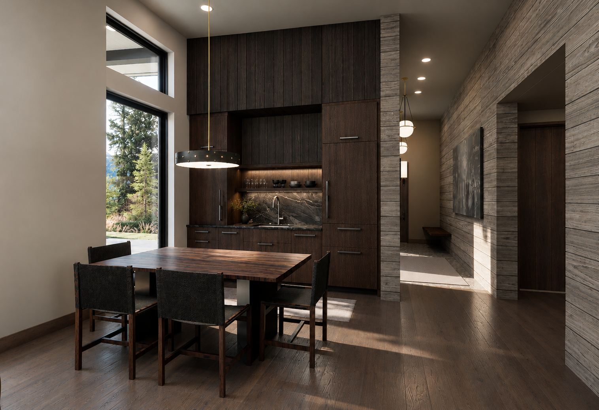
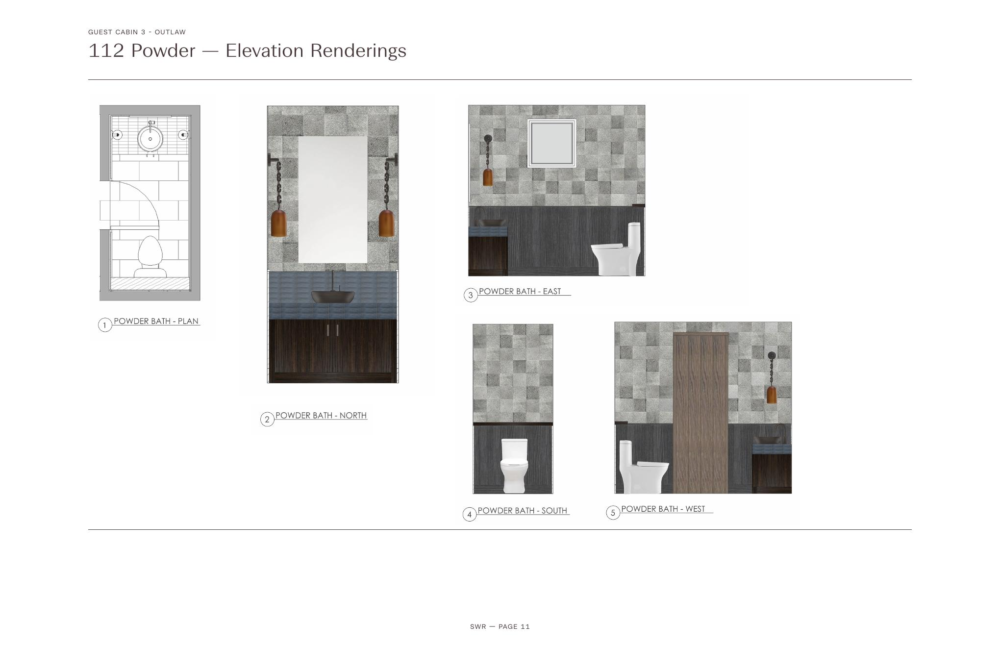
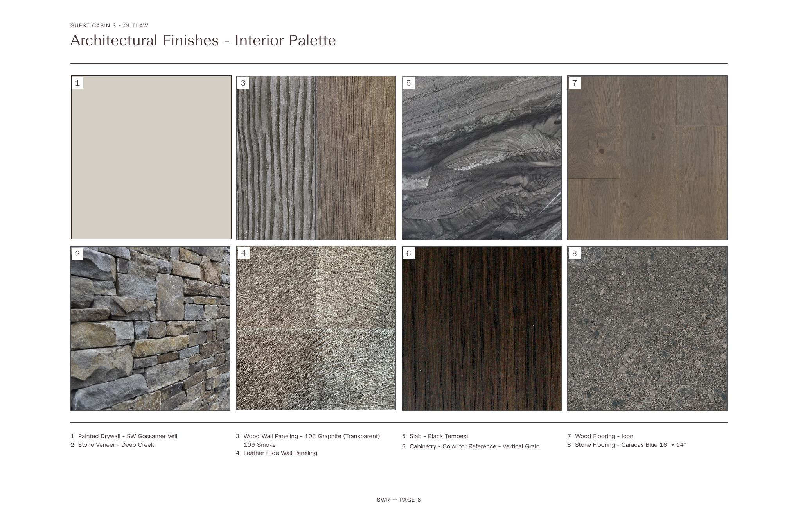
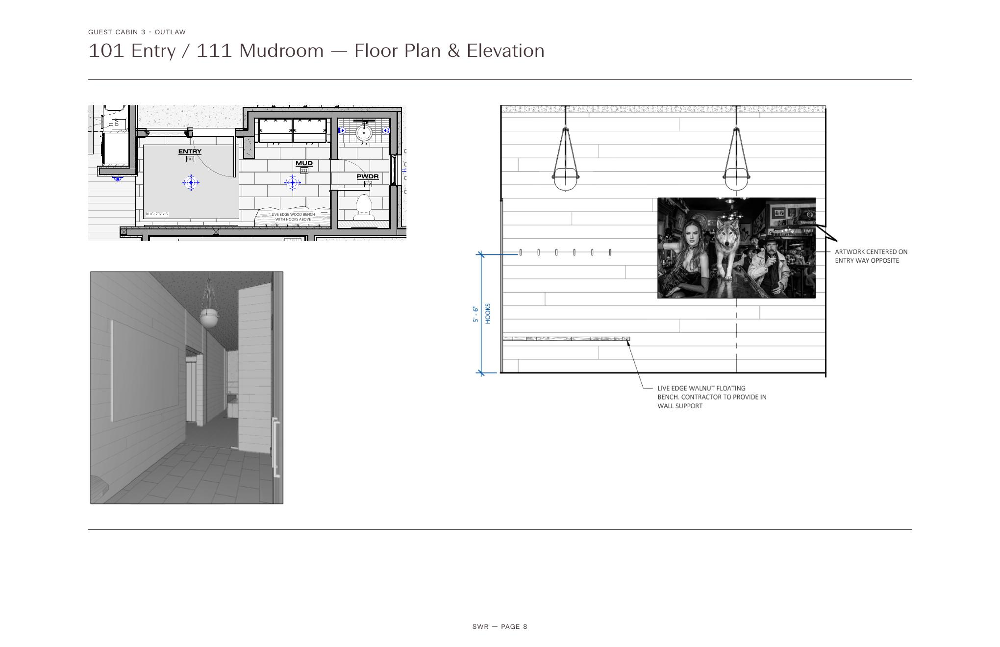
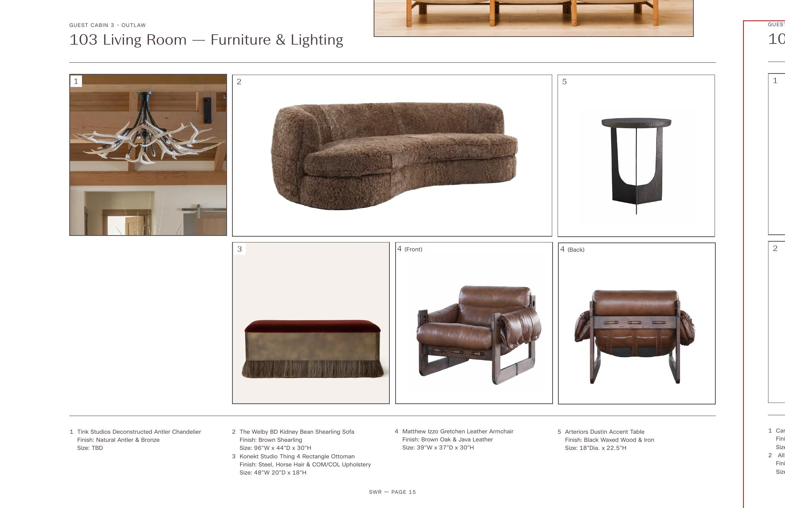
Livingston, Montana · Craftsman Style Bungalow
The original portfolio documents the project through site conditions, design layout, glazing and material studies, sections, elevations, and building composition. The complete original spreads are preserved below.
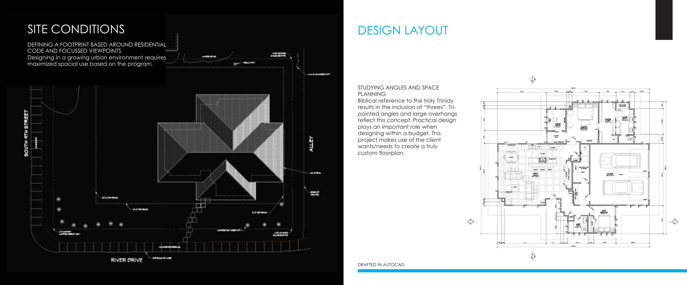
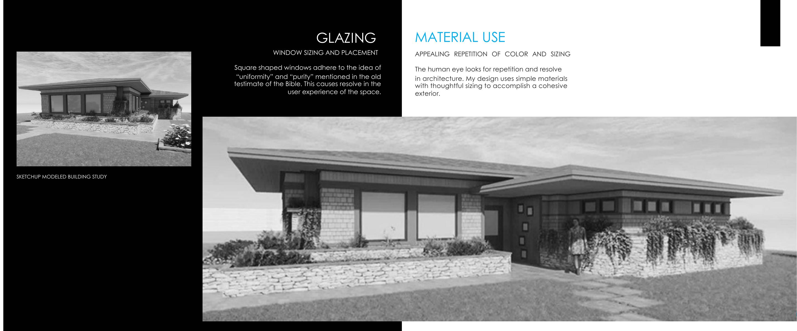
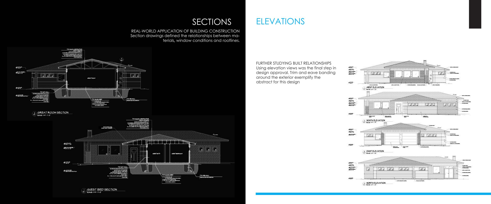
Paradise Valley, Montana · Permanence & Transience
The original portfolio explores the relationship between built space and landscape through layout systems, section iteration, elevation studies, structural design, building composition, foundation and drainage design, connections, and waterproofing. The complete original spreads are preserved below.
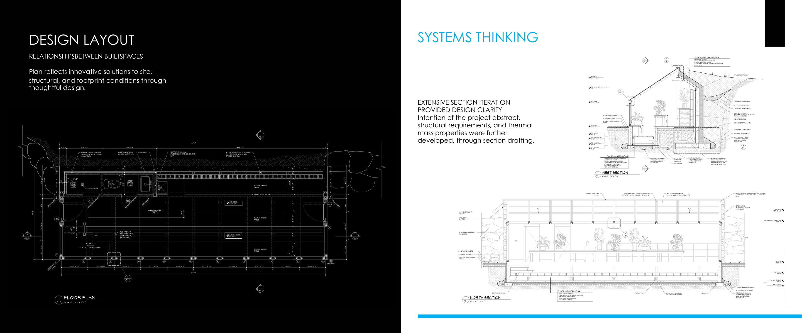
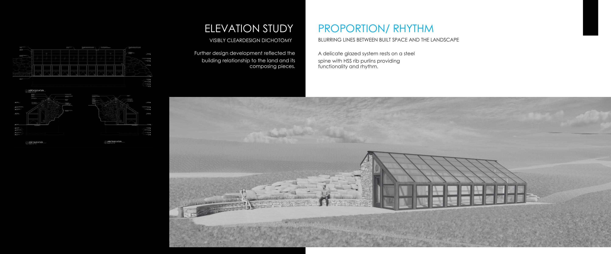
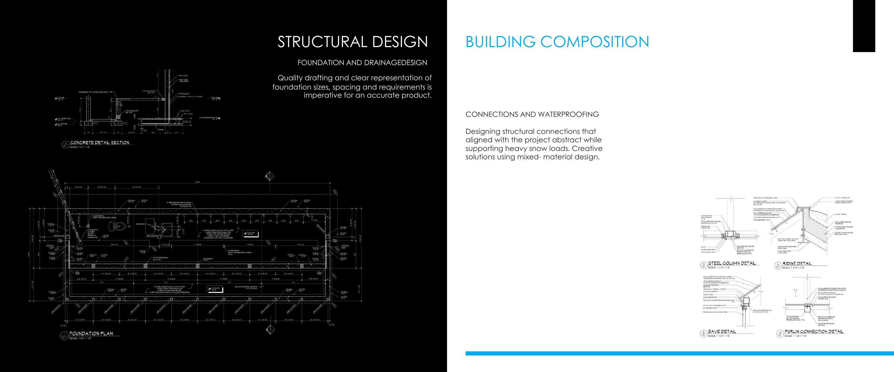
Nye, Montana · Landscape, Light & Materiality
The original portfolio documents research into the site and its cultural history, followed by integrated design, force analysis, directionality, sacred symbolism, structure, materiality, light openings, and facades. The complete original spreads are preserved below.
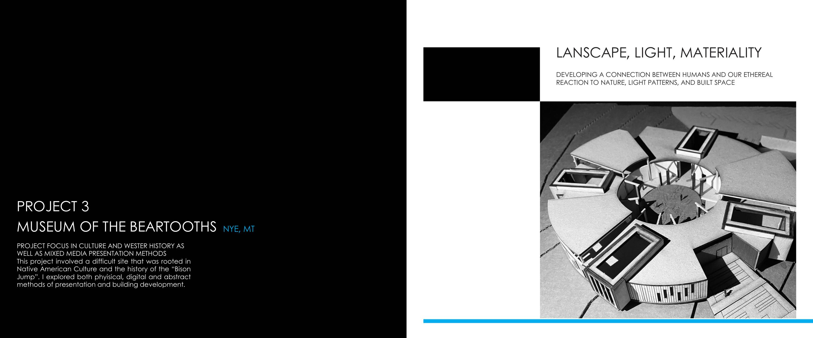
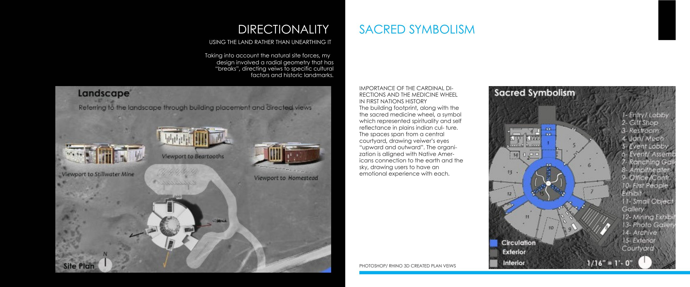
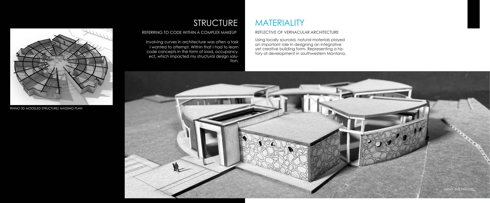
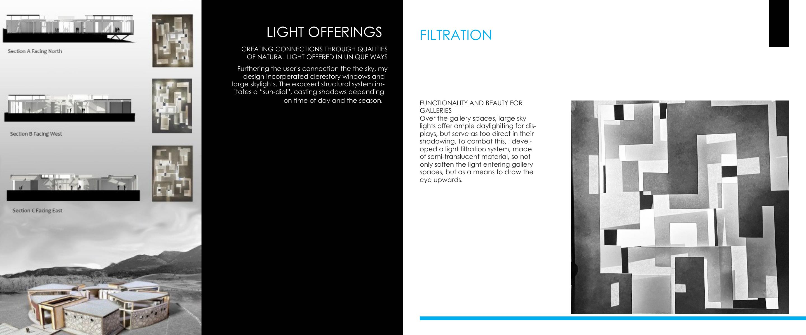
The complete 2025 portfolio PDF is included with this website package so you can retain the original document alongside the web portfolio.
My work moves between conceptual thinking and practical architectural development. I enjoy the process of testing ideas through drawings, models, sections, material studies, and construction-focused detailing—using each stage to make the final design clearer and more intentional.